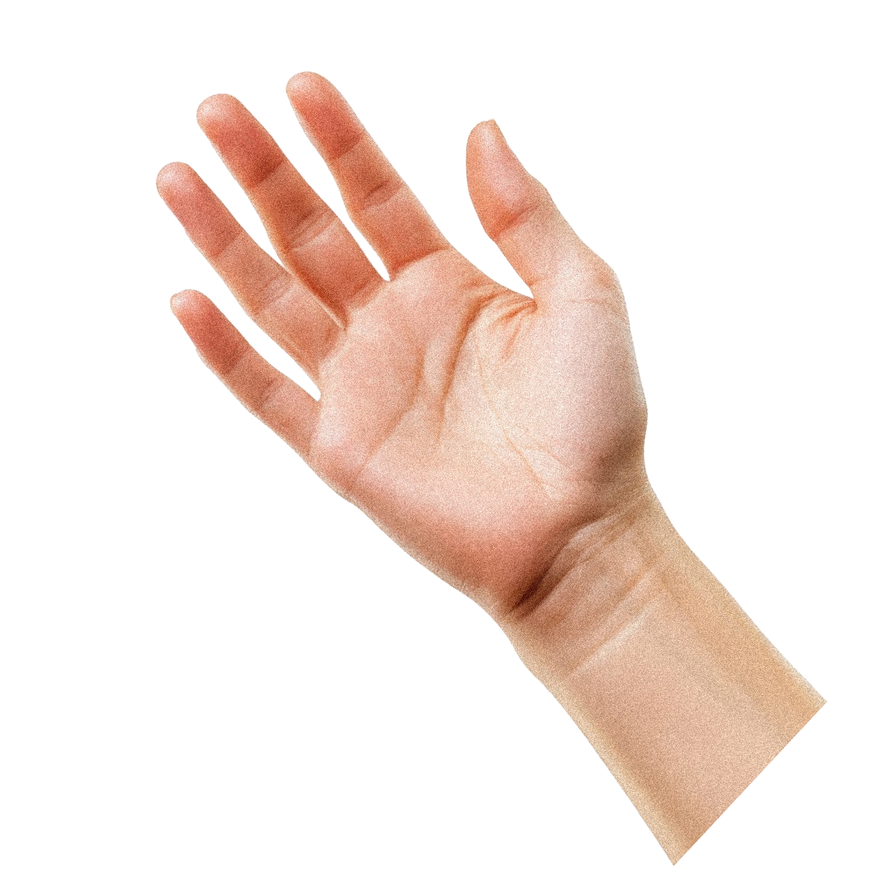

우리의 기억은 우레탄 밑에 존재한다
모래놀이터
모래장 그네
모래놀이장
두 손을 펴서 모래를 펼쳐보세요

🤲 두 손 모아 리셋 중
0.0s / 2.0s
♫
×
PLY 파일을 여기로 끌어다 놓으세요
또는 클릭해서 파일 선택
웹캠은 https 또는 localhost에서만 켜져요
🖐
한 손 펼치고 이동
: 부드러운 회전 (멈추면 감속)
✊
한 손 주먹
: 회전 정지 및 현재 각도 유지
☝️
한 손가락
: 입자 사르르 퍼뜨리기
🖐🖐
두 손 펼치기
: 모래 펼치기
🤲
두 손 모으기 (2초)
: 전체 초기화 (원래대로 복구)
🖱️
마우스 드래그
: 부드러운 회전 (R키: 리셋)
준비 중…